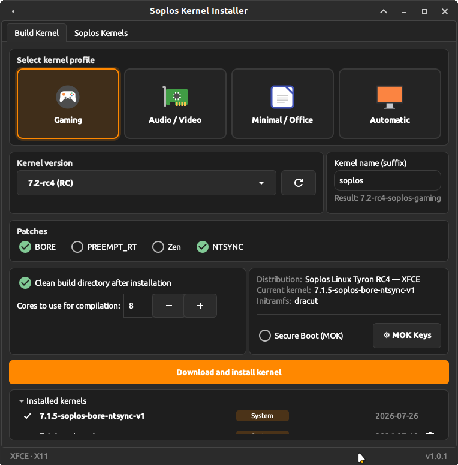
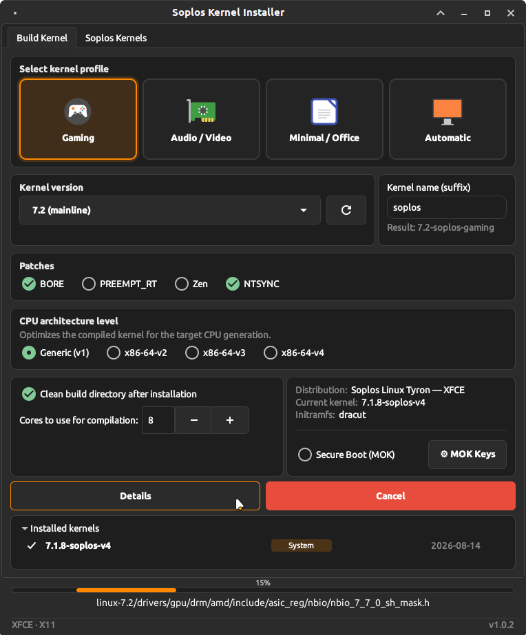
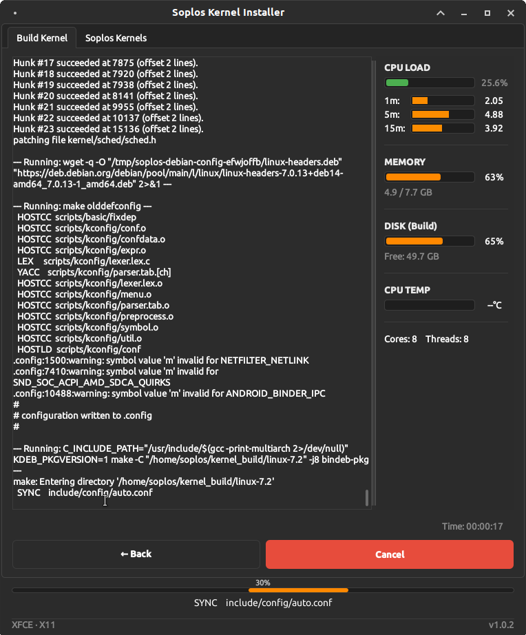
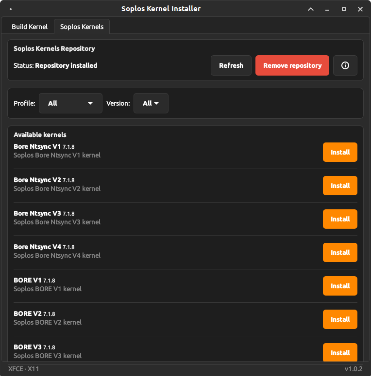

ES
ES FR
FR PT
PT DE
DE IT
IT RO
RO RU
RUOverview
Soplos Kernel Installer is a comprehensive graphical tool for downloading, patching, compiling and installing custom Linux kernels from kernel.org. It provides an intuitive tabbed interface for managing kernel versions, patches, profiles and configurations.
It also includes a dedicated tab for installing pre-built Soplos kernels directly from the official repository with a single click — no compilation required.
Key Features
- Multiple channels: Stable, LTS, RC and Soplos Featured — curated kernel versions recommended for Soplos Linux.
- Kernel profiles: Gaming, Audio/Video, Minimal/Office and Hardware Optimized — pre-configured Kconfig sets for each use case.
- Source reuse: Recycle existing kernel sources for faster recompilation, with automatic patch conflict detection.
- Secure Boot: Full MOK key management — generate keys, enroll in BIOS, sign kernel and EFI. Includes NVIDIA DKMS module signing and auto-enroll prompt.
- Installation history: Persistent build history with automatic kernel tagging (XanMod, Liquorix, Zen, System...) that survives build directory cleanup.
- Save packages: Offers to save compiled .deb packages to a chosen folder before deleting the build directory.
- Keyboard shortcuts: Ctrl+Q (quit), Ctrl+W (close), F5 (refresh), F1 (about), Ctrl+Tab / Ctrl+Shift+Tab (switch tabs).
CPU Compatibility
The CPU architecture level determines which instruction set extensions the compiled kernel can use. Choosing the right level improves performance without sacrificing compatibility.
| Level | Requirements | Reference CPUs |
|---|---|---|
| v1 — Generic | Any 64-bit CPU | All hardware — maximum compatibility |
| v2 — x86-64-v2 | SSE4.2 + POPCNT | Intel Core 2xxx+ / AMD Phenom II+ (~2009) |
| v3 — x86-64-v3 | AVX2 + BMI1/BMI2 | Intel Haswell (4xxx) / AMD Zen+ (~2013) |
| v4 — x86-64-v4 | AVX-512 | Intel Skylake-X / AMD Zen 4 (~2017+) |
AMD 3D VCache (X3D)
Soplos kernels include the amd_x3d_vcache scheduler patch for dual-CCD Ryzen X3D processors (Ryzen 9 7950X3D, 9950X3D). These CPUs have an asymmetric L3 cache topology: one CCD carries 3D VCache stacking — roughly three times more L3 than the other CCD.
At boot the patch detects this asymmetry and marks the VCache CCD cores. The scheduler then biases new tasks towards those cores when an idle VCache CPU is available and the VCache CCD is not already carrying a higher average load than the standard CCD — reducing cache misses for gaming and latency-sensitive workloads with no user configuration required.
Single-CCD X3D processors (5800X3D, 7800X3D, 9800X3D) have a symmetric L3 layout — all cores share the same cache size — so the patch has no effect and remains disabled on those systems.
Patch compatibility
- NTSYNC: Requires kernel 6.14 or later. On older versions the option is automatically disabled by the installer.
- PREEMPT_RT: Integrated upstream since kernel 6.12 — no external patch download is needed on those versions.
- Zen: Not available for RC (release candidate) kernels — stable and LTS versions only.
- BORE: Available for most stable and LTS versions. Falls back to the CachyOS patch repository automatically if the primary source does not carry the patch for a given version.
Soplos Kernels
The Soplos Kernels tab lets you install pre-built kernels from the official Soplos repository without any compilation. The list is loaded dynamically from apt-cache, so any new kernel added to the repository appears automatically. When a newer version is available an Update button appears next to the installed kernel. A dedicated Remove repository button cleanly unregisters the apt source and GPG key without affecting already-installed kernels.
- linux-soplos-stock — Vanilla upstream kernel, base for all Soplos distributions.
- linux-soplos-bore — BORE scheduler (Burst-Oriented Response Enhancer) for improved desktop responsiveness.
- linux-soplos-bore-ntsync — BORE + NTSYNC — optimized for Wine and Proton gaming.
- linux-soplos-x3d-vN — Stock kernel with the AMD X3D VCache scheduler patch and a specific x86-64 march level (v1–v4). Only available for dual-CCD Ryzen X3D processors (7950X3D, 9950X3D). Built from source via the Soplos Kernels Builder tab.
- linux-soplos-zen — Zen kernel with desktop and gaming optimizations.
- linux-soplos-ntsync — NT synchronization primitives for Wine/Proton compatibility.
- linux-soplos-rt — Real-Time kernel (PREEMPT_RT) for audio/video production.
Available patches
- BORE — Burst-Oriented Response Enhancer scheduler. Improves desktop responsiveness and application latency.
- PREEMPT_RT — Full real-time preemption. For kernels 6.12+ it is integrated upstream — no external patch download needed.
- Zen — Desktop and gaming optimizations from the Zen kernel project.
- NTSYNC — NT synchronization primitives. Significantly improves Wine and Proton compatibility for gaming.
Screenshots




